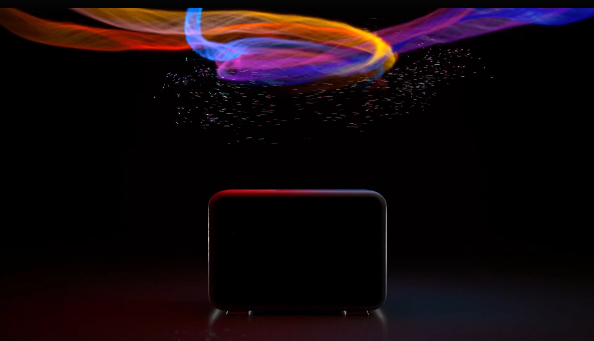
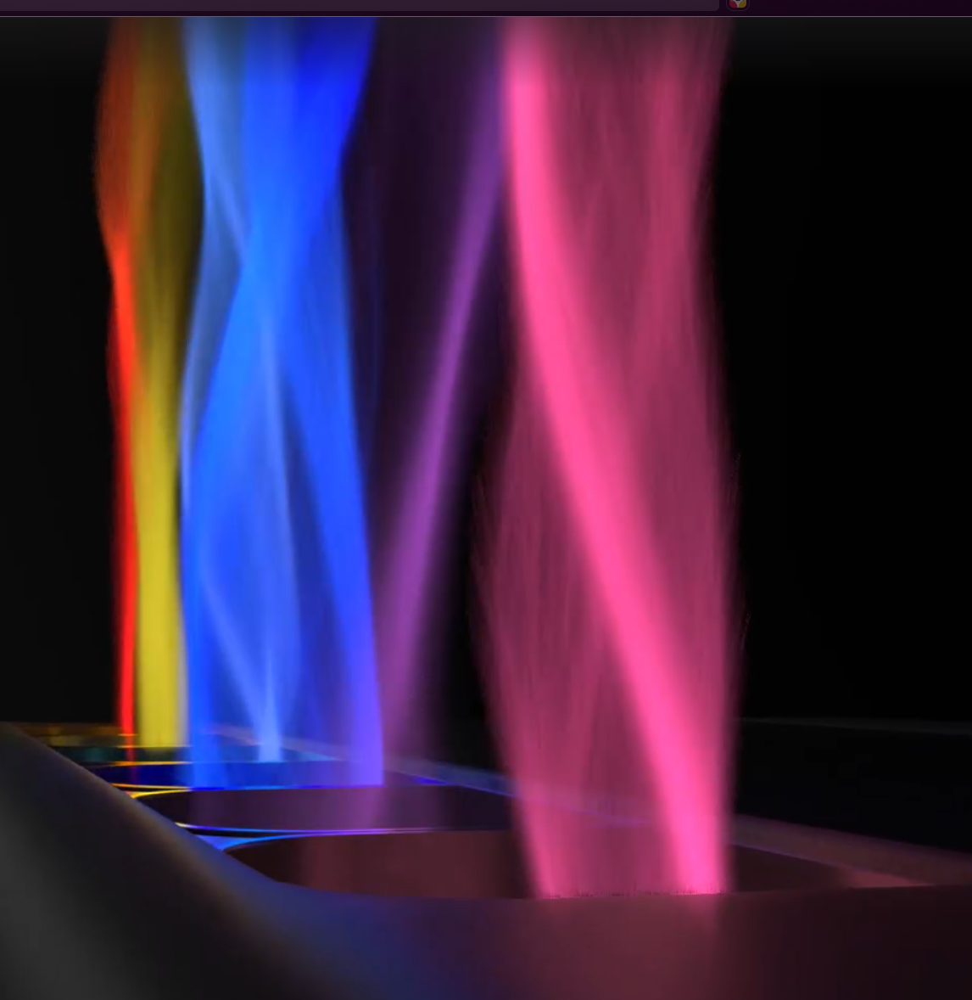
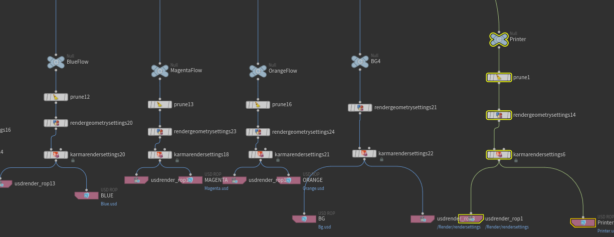

← 部落格 × Harbour × ETC


第 9 週
團隊成員
Yiqi Zheng（特效）
Riley Ho（特效）
Itim Kongsakulvatanasook（特效）
Sofia Mancias（合成）
3 月 2 日
Benji Hopkins（外觀開發）
SCAD × HARBOR × ETC － 第 9 週
大家好，這是我 SCAD × Harbor × ETC 部落格的第九週！
以下是週二簡報後導師們的回饋。
Kyle：
-
鏡頭 1 的粒子是不是太飽和？
-
地面和印表機看起來很棒
-
鏡頭 2 降低飽和度
-
缺少景深和動態模糊
-
更神秘一點，藏起一些東西
-
鏡頭 3 的景深也可以收窄，能幫忙遮掉畫作的低解析度
-
不確定最後一個鏡頭的暖光，也許更藍一點
Beck：
-
木頭非常亮
-
柔化木頭上的凹凸
-
不應該那麼暗，會讓它看起來很 CG
-
剪接點很重要，讓粒子在鏡頭 3 不要完全消失，再於鏡頭 4 收尾
Pheya：
-
第一個鏡頭的溢光和第二個鏡頭不一樣
-
第一個鏡頭的溢光比第二個多，但第二個鏡頭更微距？
-
木頭比較好了，但還是很光滑
-
看起來比較像塑膠
Molly：
-
如果最後一個鏡頭能看到一點粒子的痕跡會很酷，也許用霧
-
注意背景的閃爍
-
鏡頭 3 和 4 的攝影機運動感覺一樣，應該更有推進感
Molly：
-
拿掉最後一個鏡頭的橘色，換成冷色光，並把所有燈光調暗 10%
待辦事項：
-
算出高解析度靜態圖，並製作拆解與最終影片
這是我們第 9 週的預視。
這週鏡頭 1 我專注在優化外圍的粒子，讓它們和彩色流更融合。但結果視覺上不夠強，所以我們決定拿掉，讓構圖更乾淨。

鏡頭 2 我優化了色彩流，減少平面感，並加入更多體積深度來加強立體感，尤其是原本看起來很平的粉紅和洋紅區域。

算圖：
鏡頭 1 我們拆成九個圖層，讓 Sofia 在調色時能更好地控制地面陰影。

算圖的部分，我們把鏡頭 2 拆成九個圖層，讓 Sofia 調色時有更多控制。我也把印表機的墨水槽分開算，並加強它們的顏色，避免看起來像黑洞或和場景其他部分脫節。